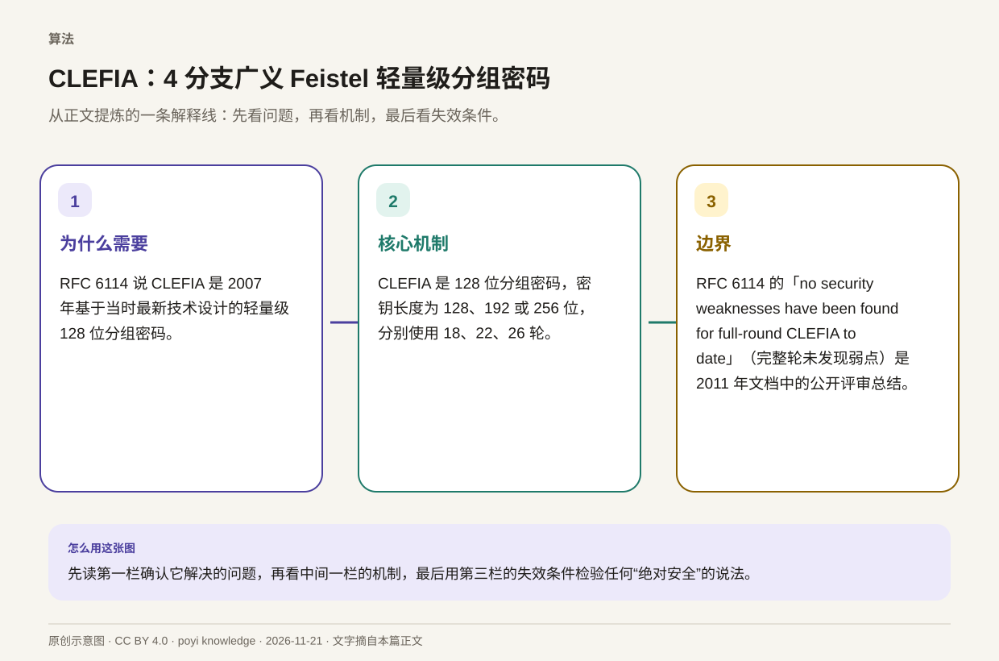
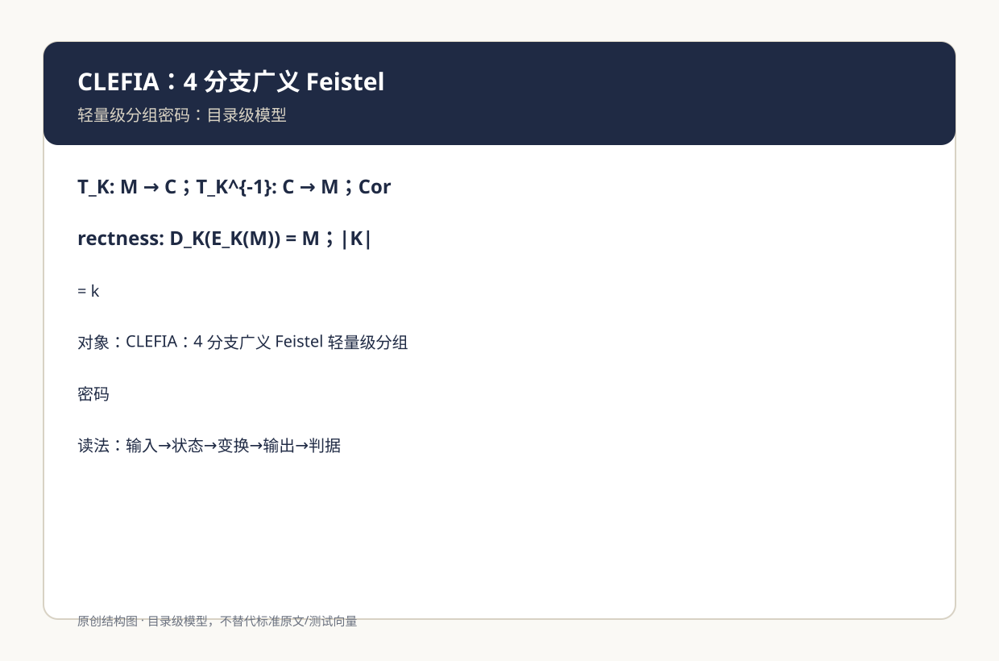

原理与机制
算法：CLEFIA 轻量级分组密码（CLEFIA）。CLEFIA 是 128 位分组密码，密钥长度为 128、192 或 256 位，分别使用 18、22、26 轮。它采用 4 分支广义 Feistel 网络（GFN4），接口与 AES 兼容：固定 128 位块，三种密钥长度。数据随机化部分把 128 位明文分成四个 32 位字 P0..P3。加密先用 WK0、WK1 对 P1、P3 做白化，再执行 GFN4，最后用 WK2、WK3 做白化：
T0 = P0
T1 = P1 XOR WK0
T2 = P2
T3 = P3 XOR WK1
Y = GFN4(RK0..RK(2r-1), T)
C0 = Y0
C1 = Y1 XOR WK2
C2 = Y2
C3 = Y3 XOR WK3
T1 = T1 XOR F0(RK(2i), T0)
T3 = T3 XOR F1(RK(2i+1), T2)
(T0, T1, T2, T3) = (T1, T2, T3, T0)
r 轮之后输出 T3 | T0 | T1 | T2。解密使用 GFNINV4,r：轮密钥按相反顺序使用，每轮后把四个字循环右移，最后用 WK0、WK1 去白化。F0 和 F1 是两种 32 位轮函数。F0 先计算 T = RK XOR x，把 T 的四个字节依次送入 S0、S1、S0、S1，再乘 M0；F1 依次送入 S1、S0、S1、S0，再乘 M1：
F0: T = RK XOR x; T0=S0(T0), T1=S1(T1), T2=S0(T2), T3=S1(T3); y = M0(T)
F1: T = RK XOR x; T0=S1(T0), T1=S0(T1), T2=S1(T2), T3=S0(T3); y = M1(T)
S0 和 S1 是两个 8 位 S-box，各 256 项。S0 基于四个 4 位 S-box，S1 基于 GF(2^8) 上的求逆；规范给出的样例是 S0(0xAB)=0x7E。M0 和 M1 是 4x4 扩散矩阵：
M0:
y0 = T0 ^ 02*T1 ^ 04*T2 ^ 06*T3
y1 = 02*T0 ^ T1 ^ 06*T2 ^ 04*T3
y2 = 04*T0 ^ 06*T1 ^ T2 ^ 02*T3
y3 = 06*T0 ^ 04*T1 ^ 02*T2 ^ T3
M1:
y0 = T0 ^ 08*T1 ^ 02*T2 ^ 0A*T3
y1 = 08*T0 ^ T1 ^ 0A*T2 ^ 02*T3
y2 = 02*T0 ^ 0A*T1 ^ T2 ^ 08*T3
y3 = 0A*T0 ^ 02*T1 ^ 08*T2 ^ T3
乘法在 GF(2^8) 中进行，域多项式是 z^8 + z^4 + z^3 + z^2 + 1（低 8 位 0x1D）。密钥调度分三种长度。128 位密钥先用 GFN4,12 和 24 个 CON 常量生成 128 位中间密钥 L，再生成 WK 和 36 个 RK：
L = GFN4,12(CON_128[0..23], K0..K3)
WK0..WK3 = K0..K3
for i = 0..8:
T = L XOR (CON_128[24+4i] | CON_128[25+4i] | CON_128[26+4i] | CON_128[27+4i])
L = Sigma(L)
if i is odd: T = T XOR K
RK[4i..4i+3] = T
Sigma 是 128 位 DoubleSwap 位重排：
Y = Sigma(X) = X[7..63] | X[121..127] | X[0..6] | X[64..120]
192 和 256 位密钥先构造 KL、KR：192 位时 KR = K4|K5|~K0|~K1，256 位时 KR = K4|K5|K6|K7。然后用 GFN8,10 和 40 个 CON 常量生成 LL、LR：
LL | LR = GFN8,10(CON_k[0..39], KL0..KL3, KR0..KR3)
WK = KL XOR KR
for i = 0..10 (192) 或 0..12 (256):
if i mod 4 = 0 or 1:
T = LL XOR CON_k[40+4i..43+4i]; LL = Sigma(LL); if i is odd: T = T XOR KR
else:
T = LR XOR CON_k[40+4i..43+4i]; LR = Sigma(LR); if i is odd: T = T XOR KL
RK[4i..4i+3] = T
GFN8,r 对八个 32 位字做 r 轮，每轮更新 T1、T3、T5、T7（分别用 F0、F1、F0、F1），然后把八个字循环左移一位。它只用于 192/256 位密钥调度，不用于数据随机化。CON_k 常量由 P=0xB7E1 和 Q=0x243F 生成：
CON_k[2i] = (T_i XOR P) | (~T_i <<< 1)
CON_k[2i+1] = (~T_i XOR Q) | (T_i <<< 8)
T_(i+1) = T_i * (0x0002^-1)
乘法在 GF(2^16) 中，域多项式是 z^16+z^15+z^13+z^11+z^5+z^4+1。128/192/256 位分别需要 60/84/92 个常量，初始值 T_0 是 0x428A、0x7137、0xB5C0。

为什么重要
RFC 6114 说 CLEFIA 是 2007 年基于当时最新技术设计的轻量级 128 位分组密码。它能在 0.13 微米标准 CMOS ASIC 库中实现于 3 Kgates 以内，同时提供 128/192/256 位安全强度和较高的软硬件性能；许多轻量级算法牺牲安全性或速度，CLEFIA 试图在两者之间取得平衡。它被提议纳入 ISO/IEC 29192-2 和日本 CRYPTREC 的电子政务推荐密码修订。RFC 6114 第 7 节说，CLEFIA 的完整轮在公开评审中没有发现安全弱点，设计者和独立密码学家都没有报告。这是 2011 年 RFC 的评估，不是对全部攻击模型的形式化证明。
应用与实例
CLEFIA 的标准化位置是 ISO/IEC 29192-2。该标准 2019 年第二版把 CLEFIA 与 PRESENT、LEA 一起列为适合轻量密码实现的分组密码：PRESENT 是 64 位块、80/128 位密钥；CLEFIA 是 128 位块、128/192/256 位密钥；LEA 也是 128 位块、128/192/256 位密钥。ISO 页面显示该版本在 2025 年 3 月仍被确认有效。RFC 6114 附录 A 给出三组向量，明文都是 000102030405060708090A0B0C0D0E0F：
128 位密钥 = FFEEDDCCBBAA99887766554433221100
密文 = DE2BF2FD9B74AACDF1298555459494FD
192 位密钥 = FFEEDDCCBBAA99887766554433221100F0E0D0C0B0A09080
密文 = E2482F649F028DC480DDA184FDE181AD
256 位密钥 = FFEEDDCCBBAA99887766554433221100F0E0D0C0B0A090807060504030201000
密文 = A1397814289DE80C10DA46D1FA48B38A
附录 B 还给出 128 位密钥的完整中间值：L=8F89A61B9DB9D0F393E65627DA0D027E，WK0..3=FFEEDDCC BBAA9988 77665544 33221100，以及 RK0..35 共 36 个 32 位轮密钥。它还列出白化后的状态和每轮 F 函数的 key add、S、M 值。本文的实现逐项复现这些值，因此不仅校验最终密文，也校验密钥调度和轮函数。

边界与攻击面
RFC 6114 的「no security weaknesses have been found for full-round CLEFIA to date」（完整轮未发现弱点）是 2011 年文档中的公开评审总结，不是对全部攻击模型的形式化证明，也不保证未来不会出现更好的分析方法。本文不把它扩大成绝对安全结论，也不引用未经本文核实的攻击论文来宣称 CLEFIA 已被攻破。CLEFIA 的部署位置需要区分：它是 Sony 设计的轻量级算法，2007 年发表，被提议纳入 ISO/IEC 29192-2 和 CRYPTREC 的电子政务推荐密码修订；ISO/IEC 29192-2:2019 正式把它与 PRESENT、LEA 并列为轻量级分组密码。本文不把它说成通用协议的默认算法；被标准化不等于在所有协议中默认可用。实现层面，本文的教学实现按字节查 S0/S1 并做 32 位异或和 GF(2^8) 乘法，不是常量时间实现，缓存和时序可能泄露与密钥相关的访问模式；它不生成密钥，不实现工作模式、IV 管理、填充、完整性保护或侧信道防护，不能用于保护真实数据。CLEFIA 只定义分组密码，协议层必须自己处理这些事项。
历史与背景
CLEFIA 的算法在 2007 年发表，由 Sony 设计，目标是面向资源受限设备的轻量级密码。RFC 6114 由 M.Katagi 和 S.Moriai（Sony Corporation）在 2011 年 3 月发表，类别是 Informational，属于 Independent Submission；它给出算法、组件、密钥调度、测试向量和中间值。RFC 6114 说 CLEFIA 自发表以来经过公开评审，没有被报告安全弱点，并被提议纳入 ISO/IEC 29192-2 和日本 CRYPTREC 的电子政务推荐密码修订。ISO/IEC 29192-2:2019 第二版把 CLEFIA 与 PRESENT、LEA 一起列为适合轻量密码实现的三种分组密码，该版本在 2025 年 3 月仍被确认有效。本文的 CLEFIA 实体只指这一种 128 位分组密码；PRESENT、LEA、AES、Camellia 是其他实体，ISO/IEC 29192-2 是把 CLEFIA 与 PRESENT、LEA 并列标准化的文件，不是算法本身。
逐步示例与核验
复算示例
取标准或公开测试向量中的一组参数，按“输入—执行—输出”记录：先写出该条目的形式式 (C=E_K(P;r),\qquad P=D_K(C))；再按规范顺序执行每一步，最后把输出与独立实现或标准向量逐字节对照。若没有可引用的数值向量，就只记录结构步骤，不伪造输出。
参考出处
- Wikipedia search entry for CLEFIA 轻量级分组密码. https://zh.wikipedia.org/w/index.php?search=CLEFIA%20%E8%BD%BB%E9%87%8F%E7%BA%A7%E5%88%86%E7%BB%84%E5%AF%86%E7%A0%81
- Handbook of Applied Cryptography (Menezes, van Oorschot, Vanstone). https://www.cacr.math.uwaterloo.ca/hac/